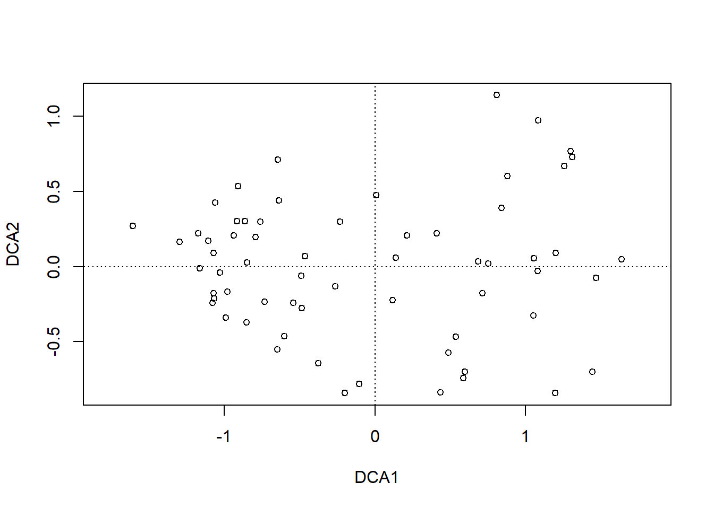
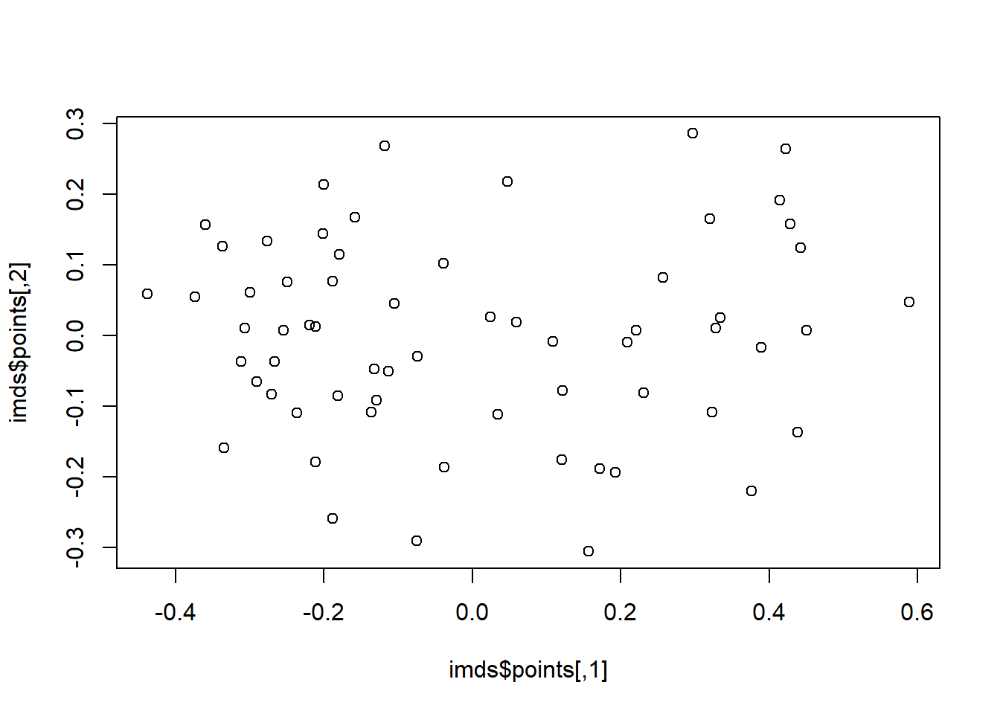
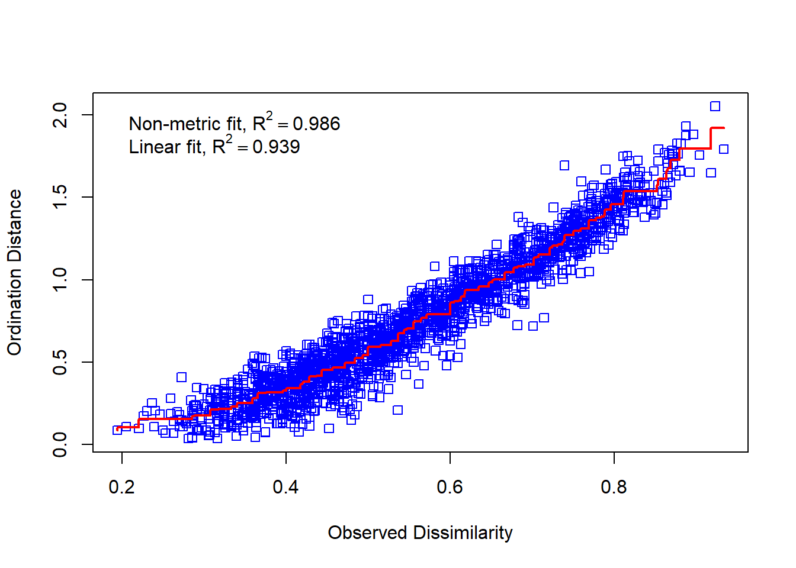

# Originaldaten für Plot separierenx1 <- raw[, 1]y1 <- raw[, 2]z <-c(rep(1:6))# Plot Abhängigkeit der Arten vom Umweltgradientenplot(c(x1, y1) ~c(z, z),type ="n", axes = T, bty ="l",las =1, xlim =c(1, 6), ylim =c(0, 5),xlab ="Umweltgradient", ylab ="Deckung der Arten")points(x1 ~ z, pch =21, type ="b")points(y1 ~ z, pch =16, type ="b")text(1.5, 1.5, "Art 1", col ="darkgray")text(1.5, 0.5, "Art 2", col ="darkgray")# Daten zentrieren# d.h. transformieren so, dass Mittelwert = 0cent <-scale(raw, scale =FALSE)x2 <- cent[, 1] # für nachfolgenden Plot speicherny2 <- cent[, 2] # für nachfolgenden Plot speichern# Daten zusätzlich rotieren# PCA zentriert und rotiert Dateno.pca <-pca(raw)
Error in pca(raw): konnte Funktion "pca" nicht finden
x3 <- o.pca$scores[, 1] # für nachfolgenden Plot speichern
Error in eval(expr, envir, enclos): Objekt 'o.pca' nicht gefunden
y3 <- o.pca$scores[, 2] # für nachfolgenden Plot speichern
Error in eval(expr, envir, enclos): Objekt 'o.pca' nicht gefunden
# Visualisierung der Schritte im Ordinationsraumplot(c(y1, y2, y3) ~c(x1, x2, x3),type ="n", axes = T, bty ="l", las =1,xlim =c(-4, 4), ylim =c(-4, 4), xlab ="Art 1", ylab ="Art 2")
Error in eval(predvars, data, env): Objekt 'y3' nicht gefunden
points(y1 ~ x1, pch =21, type ="b", col ="green", lwd =2)text(-2.5, 4, "Originaldaten", col ="green")points(y2 ~ x2, pch =16, type ="b", col ="red", lwd =2)text(-2.5, 3.5, "Zentriert", col ="red")points(y3 ~ x3, pch =17, type ="b", col ="blue", lwd =2)
Error in eval(predvars, data, env): Objekt 'y3' nicht gefunden
text(-2.5, 3, "Zentriert & rotiert", col ="blue")
# Durchführung der PCAo.pca <-pca(raw)
Error in pca(raw): konnte Funktion "pca" nicht finden
plot(o.pca)
Error in plot(o.pca): Objekt 'o.pca' nicht gefunden
# Koordinaten im Ordinationsraumo.pca$scores
Error in eval(expr, envir, enclos): Objekt 'o.pca' nicht gefunden
# Korrelationen der Variablen mit den Ordinationsachseno.pca$loadings
Error in eval(expr, envir, enclos): Objekt 'o.pca' nicht gefunden
# Erklärte Varianz der AchsenE <- o.pca$sdev^2/ o.pca$totdev *100
Error in eval(expr, envir, enclos): Objekt 'o.pca' nicht gefunden
E
Error in eval(expr, envir, enclos): Objekt 'E' nicht gefunden
# Visualisieren mit prcomppca.2<-prcomp(raw, scale = F)summary(pca.2)
Importance of components:
PC1 PC2
Standard deviation 1.548 0.7154
Proportion of Variance 0.824 0.1760
Cumulative Proportion 0.824 1.0000
plot(pca.2) #
biplot(pca.2)# mit veganlibrary("vegan")
# Die Funktion rda führt ein PCA aus an wenn nicht Artdaten UND Umweltdaten definiert werdenpca.3<-rda(raw, scale =FALSE)# scores(pca.3, display = c("sites"))# scores(pca.3, display = c("species"))summary(pca.3, axes =0)
Call:
rda(X = raw, scale = FALSE)
Partitioning of variance:
Inertia Proportion
Total 2.908 1
Unconstrained 2.908 1
Eigenvalues, and their contribution to the variance
Importance of components:
PC1 PC2
Eigenvalue 2.396 0.5119
Proportion Explained 0.824 0.1760
Cumulative Proportion 0.824 1.0000
Scaling 2 for species and site scores
* Species are scaled proportional to eigenvalues
* Sites are unscaled: weighted dispersion equal on all dimensions
* General scaling constant of scores:
biplot(pca.3)
# Mit Beispieldaten aus Wildilibrary("readr")sveg <-read_delim("datasets/stat5-8/dave_sveg.csv")str(sveg)summary(sveg)names(sveg)
dca.1<-decorana(sveg, mk =10)plot(dca.1, display ="sites", type ="point")

dca.2<-decorana(sveg, mk =100)plot(dca.2, display ="sites", type ="point")
NMDS
# Distanzmatrix als Start erzeugen (PCA)mde <-vegdist(sveg, method ="euclidean")# Alternative mit einem für Vegetationsdaten häufig verwendeten Dissimilarity-indexmde <-vegdist(sveg, method ="bray")# Z wei verschiedene NMDS-Methodenlibrary("MASS")set.seed(1) # macht man, wenn man bei einer Wiederholung exakt die gleichen Ergebnisse willimds <-isoMDS(mde, k =2)
initial value 16.524491
iter 5 value 12.518681
iter 10 value 12.025808
iter 10 value 12.020751
iter 10 value 12.020751
final value 12.020751
converged
set.seed(1)mmds <-metaMDS(mde, k =2)
Run 0 stress 0.1179909
Run 1 stress 0.1179909
... Procrustes: rmse 1.11122e-05 max resid 4.697213e-05
... Similar to previous best
Run 2 stress 0.170918
Run 3 stress 0.1529993
Run 4 stress 0.1179909
... Procrustes: rmse 2.021269e-06 max resid 1.184555e-05
... Similar to previous best
Run 5 stress 0.1252011
Run 6 stress 0.1583424
Run 7 stress 0.1181212
... Procrustes: rmse 0.006525662 max resid 0.04396629
Run 8 stress 0.1596312
Run 9 stress 0.1630026
Run 10 stress 0.1179909
... New best solution
... Procrustes: rmse 3.475822e-06 max resid 2.360888e-05
... Similar to previous best
Run 11 stress 0.1538119
Run 12 stress 0.1252011
Run 13 stress 0.1500845
Run 14 stress 0.1251634
Run 15 stress 0.1251634
Run 16 stress 0.1179909
... Procrustes: rmse 5.655652e-06 max resid 1.960818e-05
... Similar to previous best
Run 17 stress 0.1179909
... Procrustes: rmse 7.036898e-06 max resid 2.755273e-05
... Similar to previous best
Run 18 stress 0.1179909
... Procrustes: rmse 1.0129e-05 max resid 3.793497e-05
... Similar to previous best
Run 19 stress 0.1251572
Run 20 stress 0.1179909
... Procrustes: rmse 5.011736e-06 max resid 2.261906e-05
... Similar to previous best
*** Best solution repeated 5 times
plot(imds$points)

plot(mmds$points)
# Stress = S² = Abweichung der zweidimensionalen NMDS-Lösung von der originalen Distanzmatrixstressplot(imds, mde)
stressplot(mmds, mde)

Wildi, Otto. 2017. Data analysis in vegetation ecology. Cabi.
Quellcode
---date: 2023-11-14lesson: Stat6thema: Einführung in "multivariate" Methodenindex: 1format: html: code-tools: source: trueknitr: opts_chunk: collapse: false---# Stat6: Demo- Download dieses Demoscript via "\</\>Code" (oben rechts)- Datensatz *dave_sveg.csv* von @wildi2017data## Ordinationen I### PCA```{r}library("labdsv")# Für Ordinationen benötigen wir Matrizen, nicht Dataframes# Generieren von Datenraw <-matrix(c(1, 2, 2.5, 2.5, 1, 0.5, 0, 1, 2, 4, 3, 1), nrow =6)colnames(raw) <-c("Art1", "Art2")rownames(raw) <-c("Ort1", "Ort2", "Ort3", "Ort4", "Ort5", "Ort6")raw# Originaldaten für Plot separierenx1 <- raw[, 1]y1 <- raw[, 2]z <-c(rep(1:6))# Plot Abhängigkeit der Arten vom Umweltgradientenplot(c(x1, y1) ~c(z, z),type ="n", axes = T, bty ="l",las =1, xlim =c(1, 6), ylim =c(0, 5),xlab ="Umweltgradient", ylab ="Deckung der Arten")points(x1 ~ z, pch =21, type ="b")points(y1 ~ z, pch =16, type ="b")text(1.5, 1.5, "Art 1", col ="darkgray")text(1.5, 0.5, "Art 2", col ="darkgray")# Daten zentrieren# d.h. transformieren so, dass Mittelwert = 0cent <-scale(raw, scale =FALSE)x2 <- cent[, 1] # für nachfolgenden Plot speicherny2 <- cent[, 2] # für nachfolgenden Plot speichern# Daten zusätzlich rotieren# PCA zentriert und rotiert Dateno.pca <-pca(raw)x3 <- o.pca$scores[, 1] # für nachfolgenden Plot speicherny3 <- o.pca$scores[, 2] # für nachfolgenden Plot speichern# Visualisierung der Schritte im Ordinationsraumplot(c(y1, y2, y3) ~c(x1, x2, x3),type ="n", axes = T, bty ="l", las =1,xlim =c(-4, 4), ylim =c(-4, 4), xlab ="Art 1", ylab ="Art 2")points(y1 ~ x1, pch =21, type ="b", col ="green", lwd =2)text(-2.5, 4, "Originaldaten", col ="green")points(y2 ~ x2, pch =16, type ="b", col ="red", lwd =2)text(-2.5, 3.5, "Zentriert", col ="red")points(y3 ~ x3, pch =17, type ="b", col ="blue", lwd =2)text(-2.5, 3, "Zentriert & rotiert", col ="blue")# Durchführung der PCAo.pca <-pca(raw)plot(o.pca)# Koordinaten im Ordinationsraumo.pca$scores# Korrelationen der Variablen mit den Ordinationsachseno.pca$loadings# Erklärte Varianz der AchsenE <- o.pca$sdev^2/ o.pca$totdev *100E# Visualisieren mit prcomppca.2<-prcomp(raw, scale = F)summary(pca.2)plot(pca.2) #biplot(pca.2)# mit veganlibrary("vegan")# Die Funktion rda führt ein PCA aus an wenn nicht Artdaten UND Umweltdaten definiert werdenpca.3<-rda(raw, scale =FALSE)# scores(pca.3, display = c("sites"))# scores(pca.3, display = c("species"))summary(pca.3, axes =0)biplot(pca.3)``````{r}#| output: false# Mit Beispieldaten aus Wildilibrary("readr")sveg <-read_delim("datasets/stat5-8/dave_sveg.csv")str(sveg)summary(sveg)names(sveg)``````{r}# PCA: Deckungen Wurzeltransformiert, cor=TRUE erzwingt Nutzung der Korrelationsmatrixpca.5<-pca(sveg^0.25, cor =TRUE)``````{r}#| eval: false# Koordinaten im Ordinationsraumpca.5$scores# Korrelationen der Variablen mit den Ordinationsachsenpca.5$loadings``````{r}# Erklärte Varianz der Achsen in Prozent (sdev ist die Wurzel daraus)E <- pca.5$sdev^2/ pca.5$totdev *100EE[1:5]plot(pca.5)# PCA-Plot der Lage der Beobachtungen im Ordinationsraumplot(pca.5$scores[, 1], pca.5$scores[, 2], type ="n", asp =1, xlab ="PC1", ylab ="PC2")points(pca.5$scores[, 1], pca.5$scores[, 2], pch =18)# Subjektive Auswahl von Arten zur Darstellungsel.sp <-c(3, 11, 23, 39, 46, 72, 77, 96)snames <-names(sveg[, sel.sp])snames# PCA-Plot der Korrelationen der Variablen (hier Arten) mit den Achsen (h)x <- pca.5$loadings[, 1]y <- pca.5$loadings[, 2]plot(x, y, type ="n", asp =1)arrows(0, 0, x[sel.sp], y[sel.sp], length =0.08)text(x[sel.sp], y[sel.sp], snames, pos =1, cex =0.6)# Mit veganpca.6<-rda(sveg^0.25, scale =TRUE)# Erklärte Varianz der Achsensummary(pca.6, axes =0)# PCA-Plot der Lage der Beobachtungen im Ordinationsraumbiplot(pca.6, display ="sites", type ="points", scaling =1)# Subjektive Auswahl von Arten zur Darstellungsel.sp <-c(3, 11, 23, 39, 46, 72, 77, 96)snames <-names(sveg[, sel.sp])snames# PCA-Plot der Korrelationen der Variablen (hier Arten) mit den Achsen (h)scores <-scores(pca.6, display ="species")x <- scores[, 1]y <- scores[, 2]plot(x, y, type ="n", asp =1)arrows(0, 0, x[sel.sp], y[sel.sp], length =0.08)text(x[sel.sp], y[sel.sp], snames, pos =1, cex =0.6)# Mit angepassten Achsenplot(x, y, type ="n", asp =1, xlim =c(-1, 1), ylim =c(-0.6, 0.6))arrows(0, 0, x[sel.sp], y[sel.sp], length =0.08)text(x[sel.sp], y[sel.sp], snames, pos =1, cex =0.6)```### CA```{r}ca.1<-cca(sveg^0.5)# Arten (o) und Communities (+) plottenplot(ca.1)# Nur Arten plottenplot(ca.1, display ="species", type ="points")# Anteilige Varianz, die durch die ersten beiden Achsen erklärt wirdca.1$CA$eig[1:2] /sum(ca.1$CA$eig)summary(eigenvals(ca.1))```### DCA```{r}dca.1<-decorana(sveg, mk =10)plot(dca.1, display ="sites", type ="point")dca.2<-decorana(sveg, mk =100)plot(dca.2, display ="sites", type ="point")```### NMDS```{r}# Distanzmatrix als Start erzeugen (PCA)mde <-vegdist(sveg, method ="euclidean")# Alternative mit einem für Vegetationsdaten häufig verwendeten Dissimilarity-indexmde <-vegdist(sveg, method ="bray")# Z wei verschiedene NMDS-Methodenlibrary("MASS")set.seed(1) # macht man, wenn man bei einer Wiederholung exakt die gleichen Ergebnisse willimds <-isoMDS(mde, k =2)set.seed(1)mmds <-metaMDS(mde, k =2)plot(imds$points)plot(mmds$points)# Stress = S² = Abweichung der zweidimensionalen NMDS-Lösung von der originalen Distanzmatrixstressplot(imds, mde)stressplot(mmds, mde)```